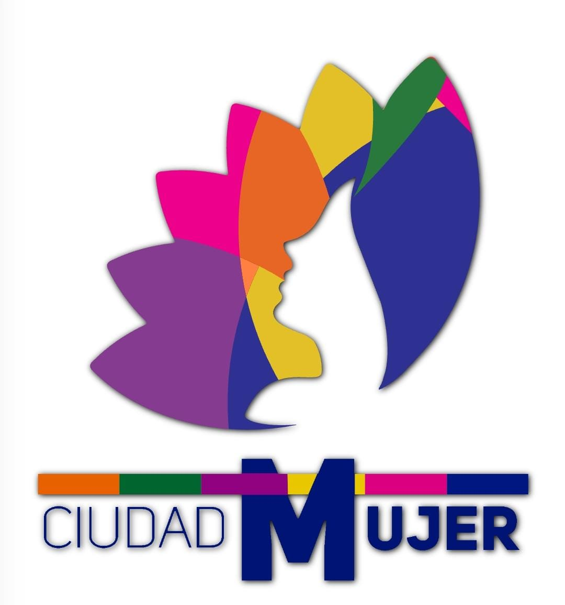
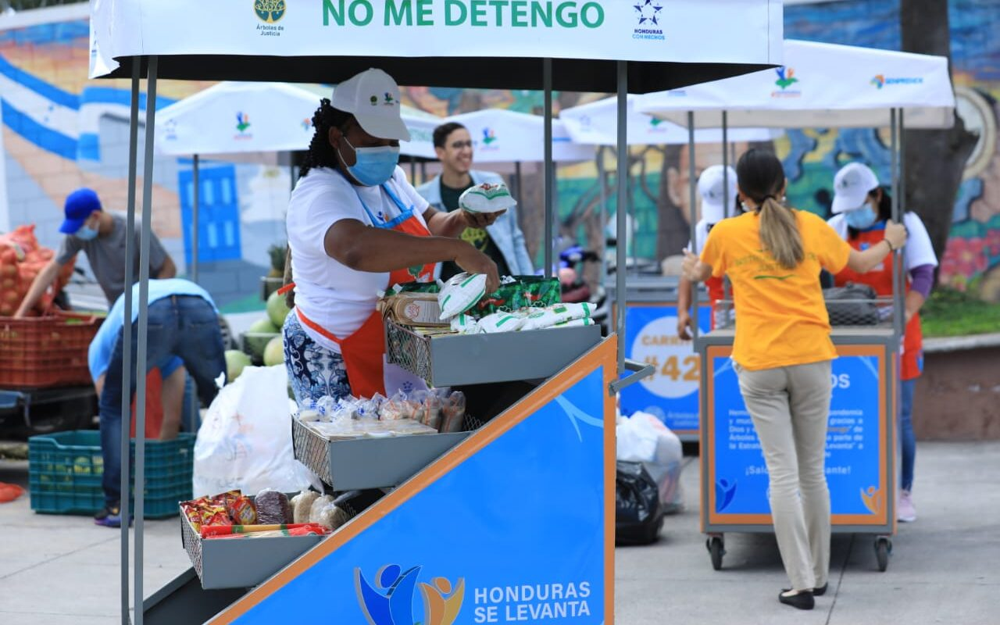
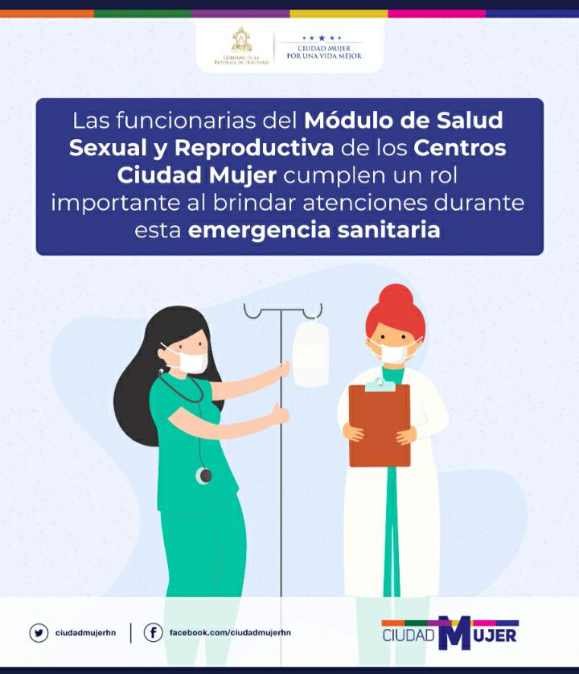
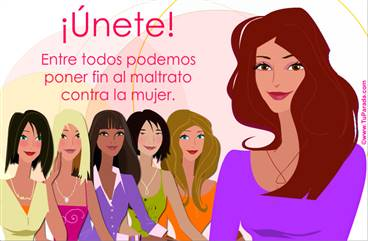
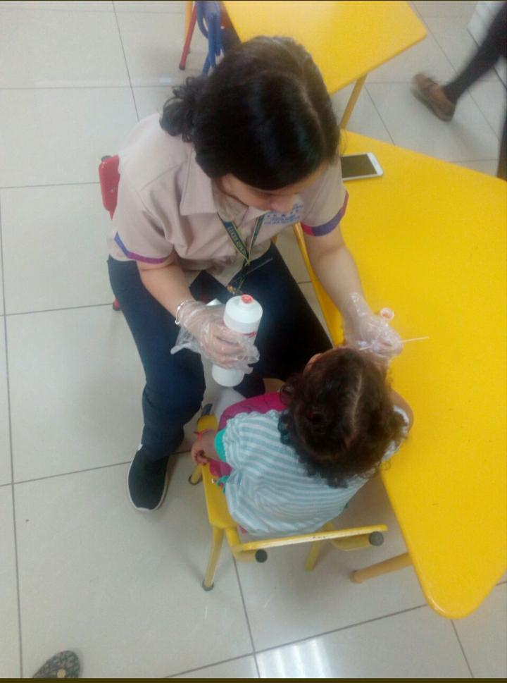
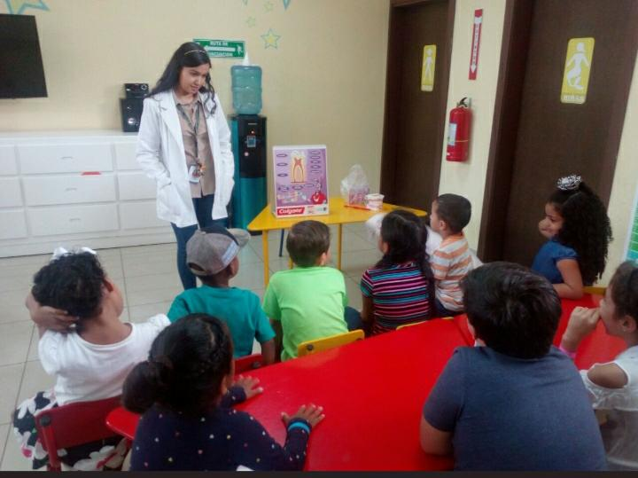

¡UN LUGAR DE OPORTUNIDADES PARA TI!
- ¿Cómo nace.?
El programa ciudad mujer nace con la finalidad de contribuir al mejoramiento de las condiciones de la vida de las mujeres en Honduras.
Ciudad Mujer es un nuevo modelo de empoderamiento para las mujeres, que integra la provisión de servicios de calidad bajo un mismo techo.
- ¿Cuál es el enfoque.?
Su enfoque está en las áreas de autonomía económica, atención a la violencia,prevención y atención del embarazo en adolescentes, salud sexual y reproductiva y, la educación colectiva.
- ¿Cuáles son los objetivos.?
Lograr una coordinación efecticva y eficiente para el avance en la ejecución de las obras conjuntamente con la Secretaría de Desarrollo de Inclusión Social. Además, concluir y equipar en tiempo y forma los tres centros de Ciudad Mujer en San Pedro Sula, Juticalpa y La Ceiba.
Servicios que ofrece Ciudad Mujer
- Módulo de Autonomía Económica.
Busca mejorar la participación laboral y la generación de ingresos laborales propios de las mujeres.Se apoyará la provisión y mejora de los servios del MAE tales como habilidades para la vida, nivelación académica, orientación, intermedación y capacitación laboral, asesoría empresarial y servicios financieros.

- Módulo de Salud Sexual y Reproductiva.
Se propone detectar tempranamente el cáncer cérvico-uterino y de mama, así como ofrecer servicios de planificación familiar (PF) y control de embarazos para reducir la mortalidad materna y la mortalidad ocasionada por cáncer cérvico-uterino y de mama.Se apoyará la provisión y mejora de los servicios del MSRR tales como control prenatal y postnatal, asesoría pre-concepcional, planificación familiar, mamografías, ultrasonografías citologías y colposcopías.

- Módulo de Atención y Protección a los Derechos de la Mujer.
Busca prevenir y atender la violencia contra la mujer. Se brinda atención de forma integral e integrada a mujeres sobrevivientes de la violencia, evitando su re victimización.Se apoyará la provisión y mejora de los servicios del MAPRODEM orientación, atención psicológica y legal, intervención policial y procuración de justicia.

- Módulo de Atención Infantil.
Los niños y las niñas recibirán una atención integral en distintos aspectos que potencian su desarrollo. Independientemente del tiempo que permanezcan en el mismo, no estarán siendo "custodiados" o "guardados" sino atendidos y recibiendo algún tiempo de servicio para su beneficio, estimulación y desarrollo.

Puedes acercarte a tu Centro Ciudad Mujer más cercano
- Choluteca
- Choloma
- Juticalpa
- Tegucigalpa
- La Ceiba
- San Pedro Sula
Números de contacto:
- Gerencia:2228-3624
- Módulo de Atención Infantil:2228-3384
- Módulo de Educación Comunitaria:2230-0812
- Módulo de Autonomía Económica:2228-2079
- Módulo de Salud:2228-3309
"CIUDAD MUJER ES UN LUGAR DE ESPERANZA"